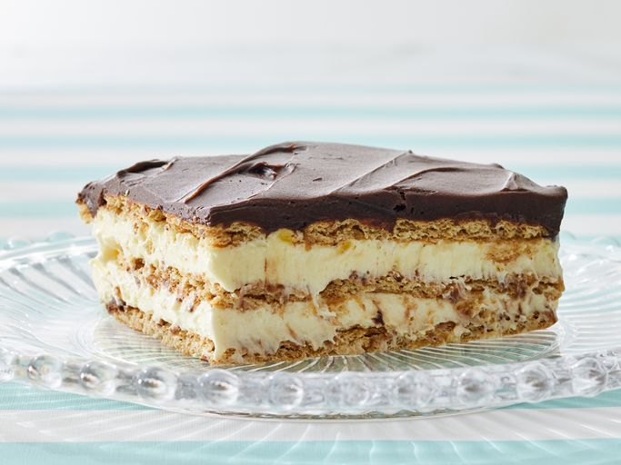

Éclair Cake

This easy éclair cake is perfect for parties or potlucks, or simply dishing up dessert for your family. It
combines graham crackers with vanilla pudding and chocolate ganache to mimic the flavors of a traditional
éclair. It's an impressive, luscious dessert with layers of texture and flavor throughout. But the best part is
that it can be made with very little fuss.
Ingredients
- 3 cups milk
- 1 (8 ounce) container frozen whipped topping, thawed
- 2 (3.5 ounce) packages instant vanilla pudding mix
- 1 (16 ounce) package graham cracker squares
- 1 (16 ounce) package prepared chocolate frosting
Steps
- Gather all ingredients.
- Stir milk, whipped topping, and pudding mix together in a medium bowl until well combined.
- Arrange a single layer of graham cracker squares in the bottom of a 9x13-inch baking pan.
- Evenly spread half of the pudding mixture over the crackers; top with another layer of crackers and the
remaining pudding mixture. Top with a final layer of graham crackers. Cover and refrigerate for 30 minutes.
- Spread frosting over the chilled cake up to the edges of the pan. Cover again and chill for at least 3 1/2
hours before serving.
Home